No. 01 · Barlow Condensed · 24 characters
Powering the new sce.com
A modular page-template system for Southern California Edison, 15 million people, one coherent web experience. Designed to scale from outage alerts to clean-energy storytelling.

No. 01 · Barlow Condensed · 24 characters
A modular page-template system for Southern California Edison, 15 million people, one coherent web experience. Designed to scale from outage alerts to clean-energy storytelling.
SCE.com serves 15 million people, from wildfire alerts to rate plans. But every team built pages their own way. Components were rebuilt from scratch, layouts drifted, and the brand looked different depending on where you landed. Shipping anything meant reinventing the basics first.
Wildfire and outage messaging is always available without blocking the everyday tasks that keep the lights on, literally. The same four quicklinks anchor every page on the site.
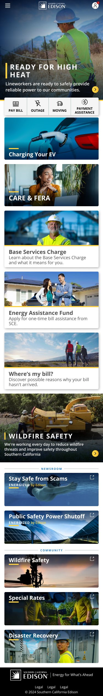
The hero swaps between seasonal storytelling and active wildfire/outage alerts, without ever pushing the four quicklinks below the fold.
Pay Bill, Outage, Moving, Payment Assistance, the high-intent actions every customer arrives looking for. Anchored on a yellow rail across every template.
Below the fold, the home page hands off to editorial: programs, scam alerts, PSPS guidance, and community stories, surfaced when relevant, quiet when not.
A photo-led landing that stages programs as equal peers. Six cards, one clear path in, from EV charging to workforce development. Pair this template with a strong hero photo and the system does the rest.
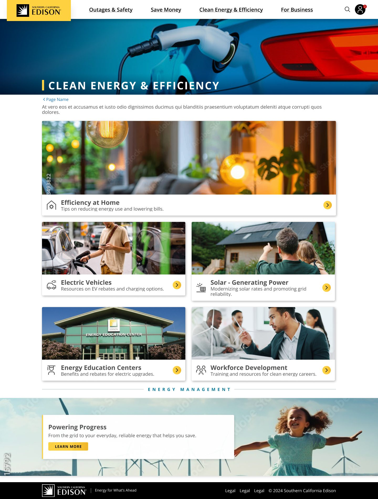
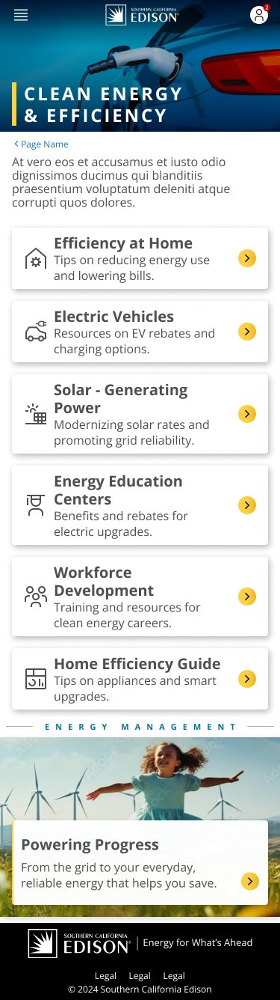
Landing B leans editorial, longer-form cards that breathe. Landing C is denser, a six-up grid for sections with many siblings. Same components, different rhythms.
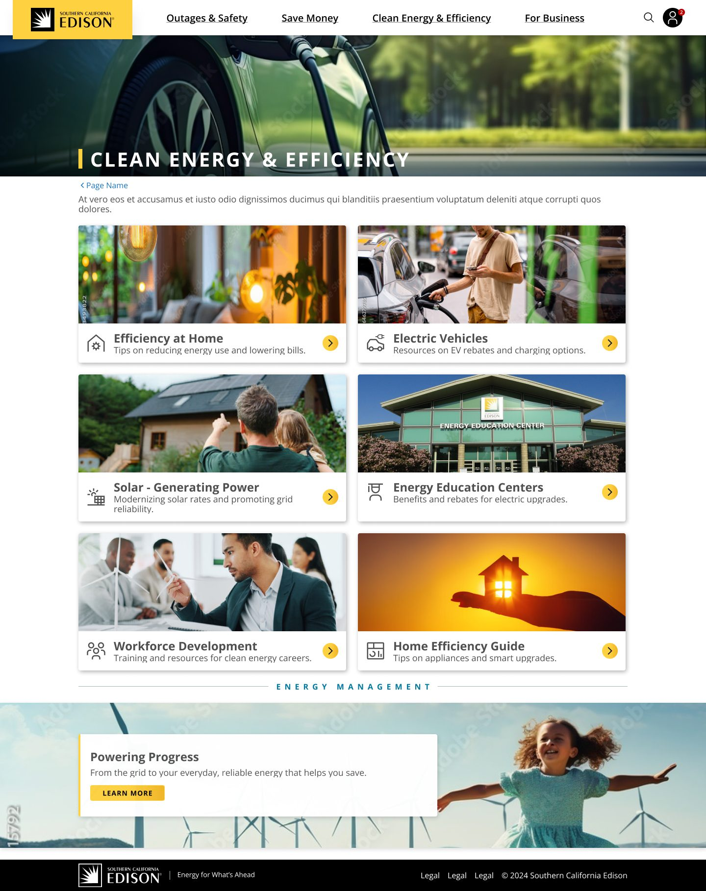
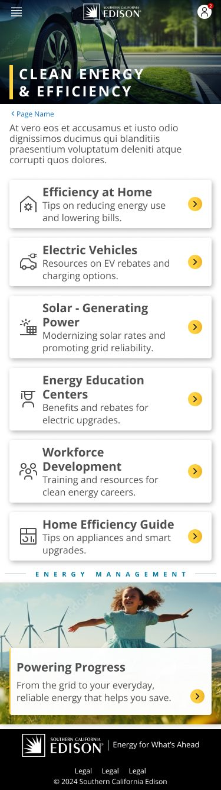
Stacked full-bleed cards. Each tile gets room to breathe.
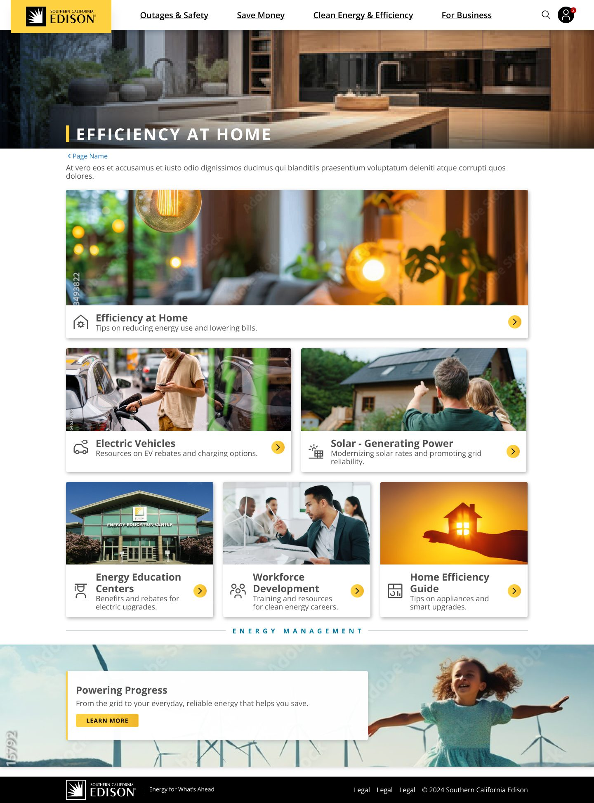
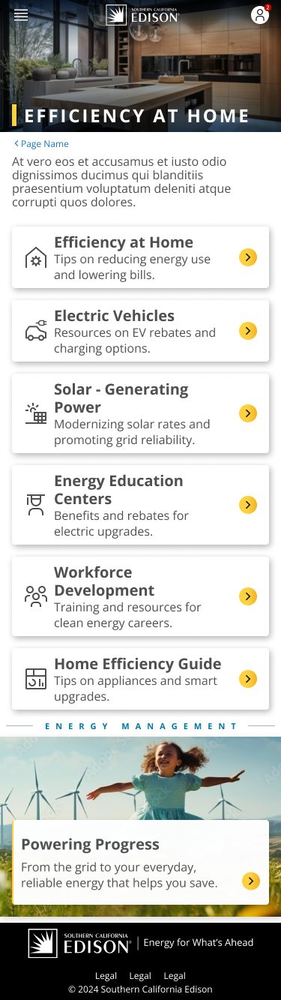
Six-up grid for parents with many children. Compact & scannable.
From a single-column long read to a three-column rate comparison, the detail family covers everything below a landing. Editors pick the structure, the system handles the typography.
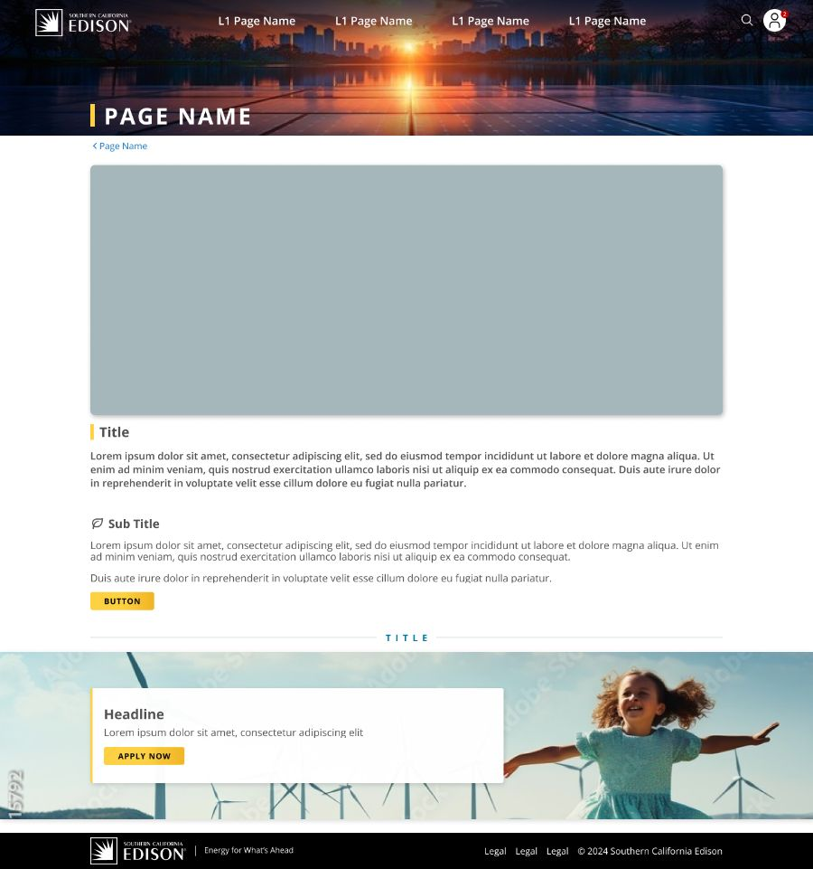
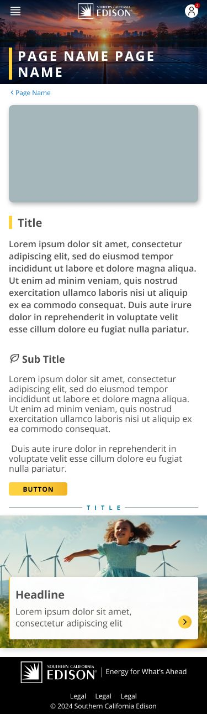
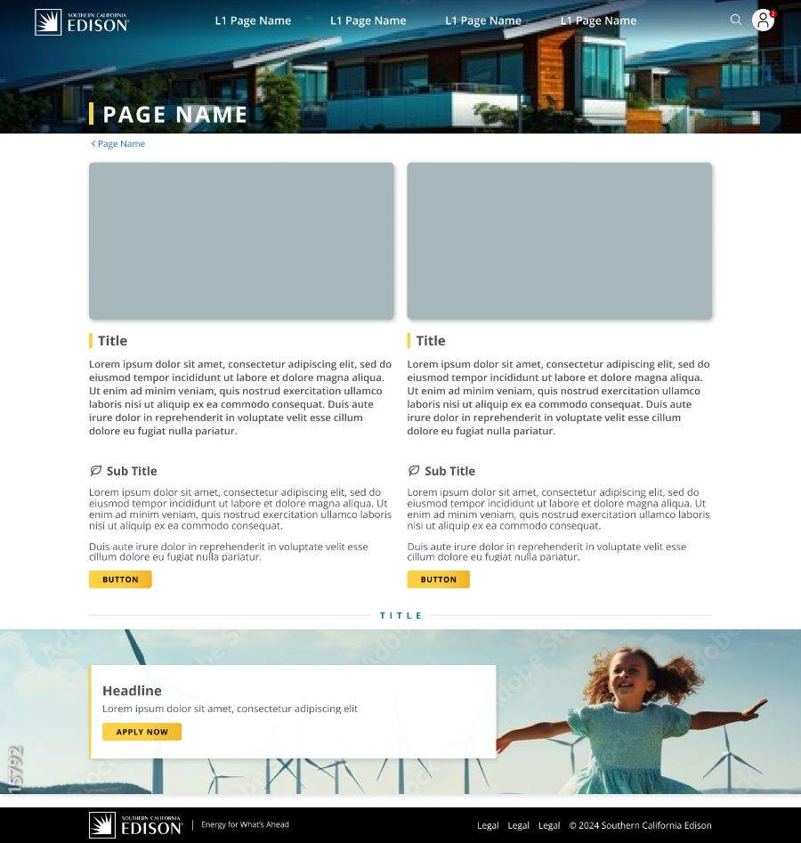
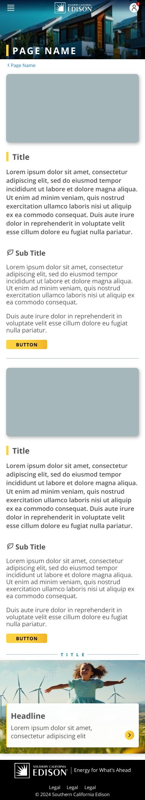
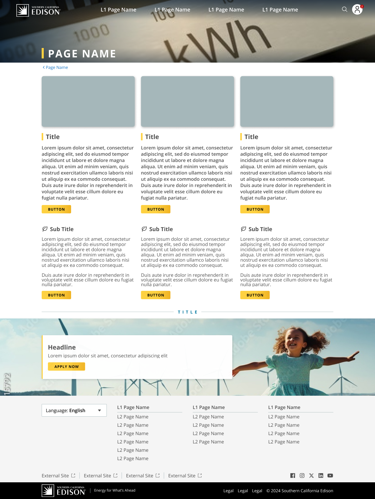
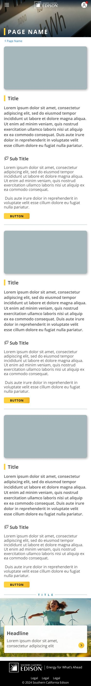
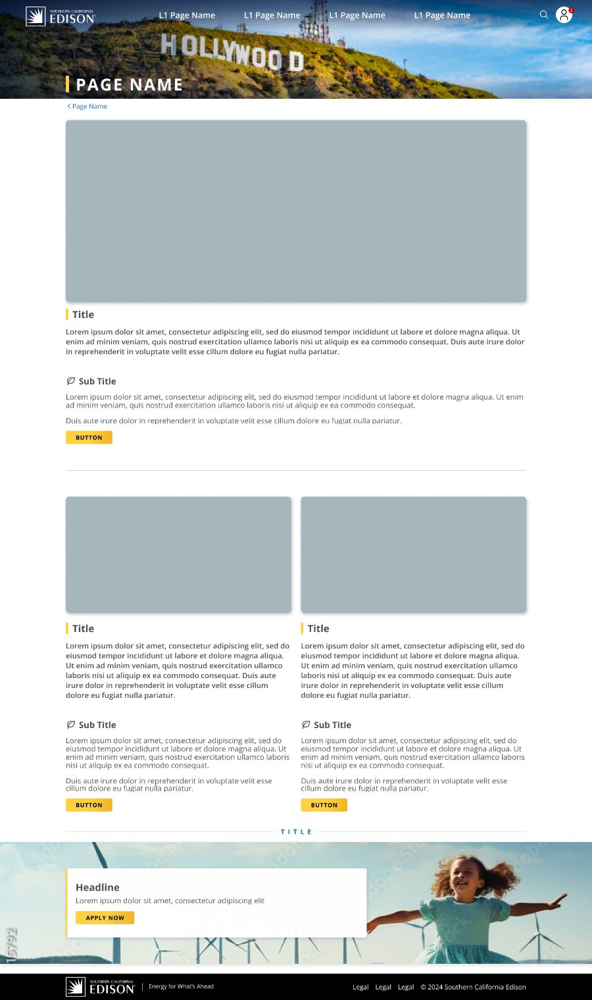
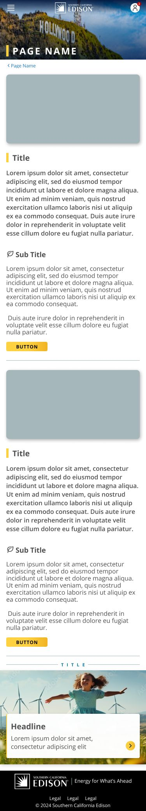
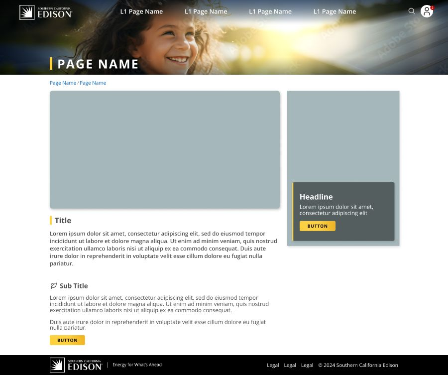
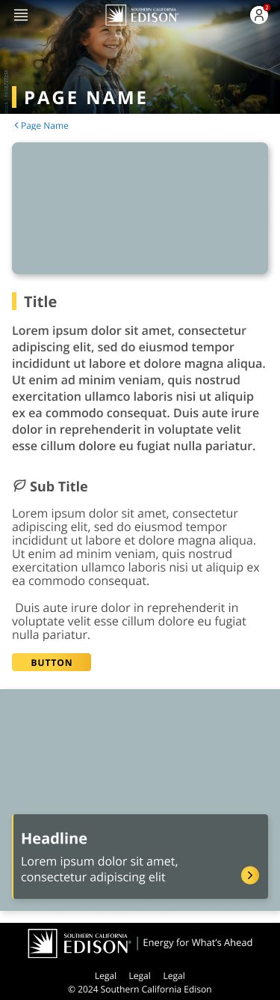
The Figma file and the codebase finally agree. New pages now ship from the system instead of from scratch.